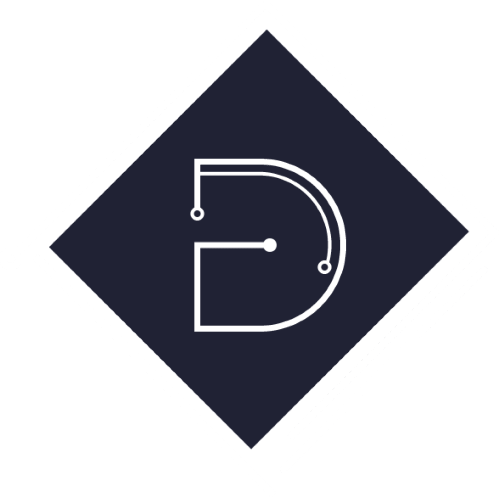
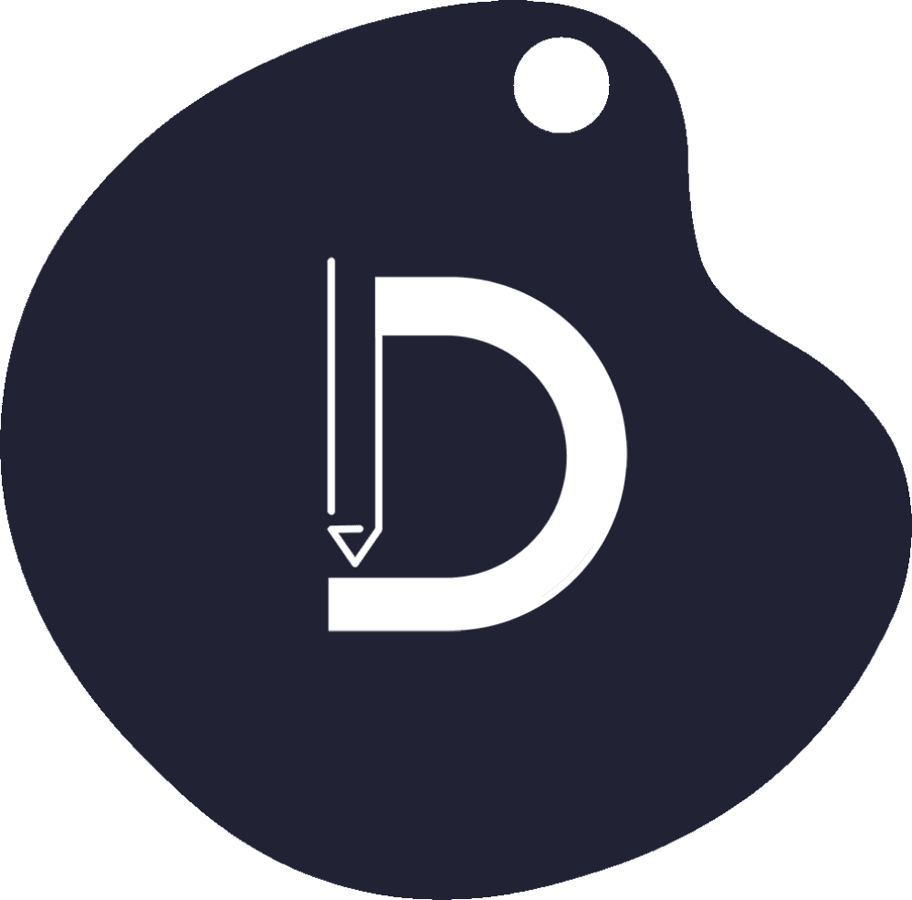

FIVE CYBER COMMUNITY
One step closer into technological singularity
PROFIL
Five Cyber Community dibentuk pada 31 Agustus tahun 2008.
Five Cyber Community adalah ekskul yang mendorong kreativitas teknologi para siswa SMAN 5 Bandung dalam memanfaatkan teknologi, sehingga mereka mendapatkan banyak ilmu dan pengalaman baru agar mereka bisa memanfaatkannya di masa yang mendatang.
Semua siswa kami terima dengan tangan terbuka, mereka akan kami ajarkan dari yang paling dasar secara perlahan.
DIVISI
Developer
Divisi ini difokuskan untuk belajar pemrogramman agar para anggota diharapkan dapat mendevelop website
Designer
Divisi ini difokuskan untuk mendesign, khususnya digital design pada UI dan UX website.